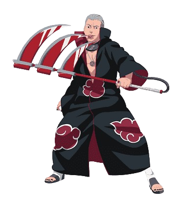
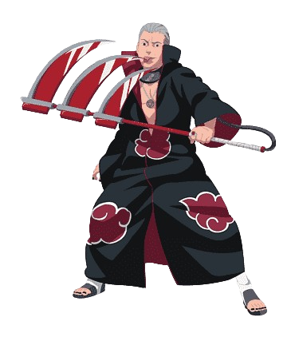

The Akatsuki
Organização
A Akatsuki é uma organização criminosa central na série Naruto, formada por ninjas renegados de
diversas vilas, cada um com habilidades extraordinárias e um passado sombrio. Originalmente criada
com o objetivo de trazer paz ao mundo ninja, a Akatsuki rapidamente se desviou desse ideal, adotando
planos mais sombrios de dominação global.
A principal missão do grupo é capturar as poderosas criaturas conhecidas como Bijuus (Bestas com
Caudas) para alimentar uma arma definitiva que traria "paz" forçada ao mundo, conforme a visão de
seus líderes. O grupo é conhecido por suas vestes negras com nuvens vermelhas, que simbolizam o
sangue derramado em conflitos intermináveis.
Cada membro da Akatsuki é um exímio guerreiro, com habilidades únicas e uma moral distorcida ou
trágica, o que faz da organização uma das mais temidas e fascinantes da série. Sob a fachada de uma
união, muitos dos membros têm seus próprios interesses e motivações, o que eventualmente leva a
traições e intrigas dentro do grupo.
A Akatsuki desempenha um papel crucial na progressão da trama de Naruto, tornando-se uma ameaça
global enquanto busca por poder absoluto para moldar o mundo à sua maneira.
 
